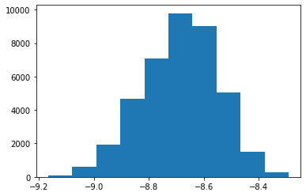
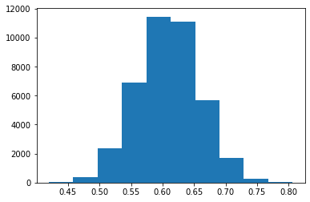
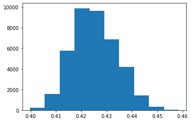
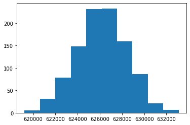
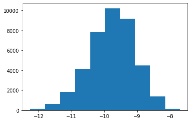
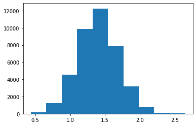
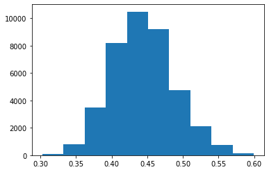
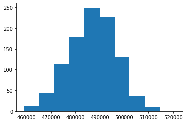

(Disclaimer: If you think the analysis here is any good then you're sorely mistaken, this post is primarily about MRP and the issues of the CFR measure)
Feel free to run the analysis yourself
In the previous post I wrote about predicting the number of covid cases using some research out of Canada, this post is about predicting the end state of each case.
Why MRP?
Multilevel regression with poststratification (MRP) has been used extensively to predict election results based on a few limited polls. In terms of MRP, predicting how a group of people will vote (based on features such as age, race and gender) is analagous to predicting how many people (based of age, gender and comorbidities) will end up in a certain state (e.g. recovered, going to ICU, deceased) because of the current pandemic.
There has been a lot of talk about Case Fatality Rate (CRF) and R0 but both of those numbers are context dependent. If somehow you could control for the amount of interactions people have in each country then you could get a number for infections per interaction and you'd be able to apply that lots of other contexts from the antisocial Finns to the high density cities of India. Similarly if you could control for gender and age when calculating CFR then you could work out the CFR for each gender and age group and apply it to the demographics of different countries.
The data
Florida have released age and gender data for each recorded covid case along with what happened to the patient for a more robust model we'd probably want to know any comorbidities the patient has, but without that information we'll just have to make the assumption that the rates of comorbidities are similar across age and gender groups in Australia and Florida. Korea has released a similar dataset, if you were so inclined you could improve the model by adding in the Korean data as well.
The model
For gender women are encoded as 0, men as 1. ages are grouped by multiples of 5 i.e. floor(age/5). I made the assumption that risk increases linearly with age. Only using two variables is a bit boring but I'd rather have boring models and rights to privacy than the alternative.
Constant

This could be interpreted as the fatality rate for the least prone group, women under 5 years old.
Gender coefficient

Age coefficient

Australia Postsratification

If every person in Australia were to be infected over a long period of time such that Australians that needed ventillators and ICUbe be beds would have access to them then the total amount of deaths would be between 620,000 and 630,000.
If you were to apply the Florida CFR to the whole Australian population then you'd expect close to twice that much (1,140,000 deaths). Why the discrepancy? The average age of florida cases was 52, whereas the average for Australians is 38. MRP accounts for the difference but CFR doesn't.
Problems with the model
Almost every CFR measure will be an upper limit because its very easy to miss an asymptomatic case but much more unlikely to miss a death. The current CFR (as of May 22) in Australia is about 1.5% which is even less than what's predicted above. This is probably because by the very nature of a case being severe it's more likely to be accounted for, with poststratification it's alright to sample a non-random, non-representative group of the wider population but it can't be biased in terms of the outcome. Here's a voting analogy, it would be alright to poll the street you live on which would be very biased towards a single social class but it wouldn't be alright to take a poll at a Trump rally, which is essentially what's happening when you only add cases of people who are seeking out tests due to showing symptoms.
Addendum
After writing the last paragraph I had a thought that since Korea were doing mandatory testing on arrivals (i.e. not testing people based solely on symptoms) then that overseas cases would avoid the above problem. There weren't enough overseas arrivals cases to do an exclusive analysis, so instead I did the same analysis across all Korean cases (pictures are in the same order as above).
Constant

Gender coefficient

Age coefficient

Australia Postsratification

What's interesting about the Korean multilevel regression model is that the B0 is much lower but the gender coefficient almost cancels out the decrease. Which means Korean men are just as worse off as Floridian men but Korean women are much better off (equivelant of being approx. 5 years younger) than Floridian women.
Using Korean data for the model reduces the amount of predicted Australian deaths by approximately 20%. Here's a thought, if you were to redo this process for each country you'd have a measure similar to CFR that accounts for the age and gender of the countries cases. I don't know what you could do with that measure. I guess if you assume health outcomes between countries are the same then you could use it as a measure for testing rate, if you assume testing rates are the same between countries then you could use it as a measure for health outcomes but you can't do both.